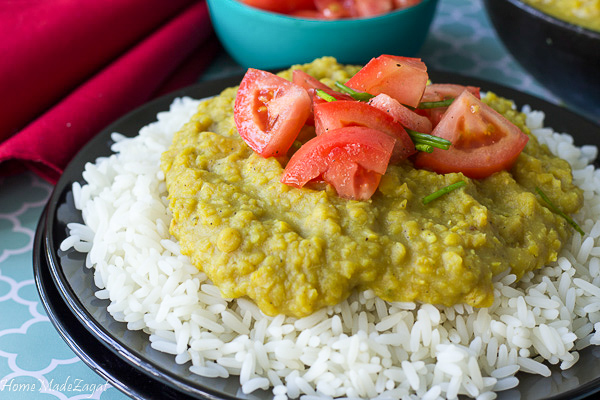

Daal and Rice

Description
Here is a classic desi dish that will keep your mouth watering as its so delicous words can not even describe it,
just be sure to follow our recipe to a tee
Ingredients
- 2 cups of split peas
- 1/2 white onion, sliced
- 4 cloves of garlic (2 mashed and 2 sliced)
-
3/4 teaspoon turmeric
- 3/4 teaspoon cumin
- 1 large hot pepper
- 7 cups water water for soaking
- 2 tablespoon oil
- Salt and pepper to taste
-
4 cups rice
-
Water
Steps
- Boil rice using your preferred method
- Add split peas to a bowl and fill with enough water to cover peas
- Leave for a few hours or overnight to swell
- Mash 2 garlic cloves
- Once peas are soaked, put water to boil in a deep pan until a high boil
- Drain off water from peas, and add peas to boiling water
- Add garlic, turmeric, onion, pepper and bring water to a high boil
- Cover pot and put stove to low and leave to simmer for 1 and a half hours. (time can vary depending on stove)
- When peas are tender add salt and pepper to taste or more liquid to get to consistency you want
- Whip or use blender to make a smooth texture to your liking.
- Heat oil in a separate pan on a medium heat.
- Add sliced garlic to pan and brown.
- Add hot oil and garlic to dhal mix and stir.
- Transfer to serving dish